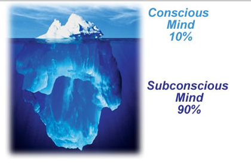
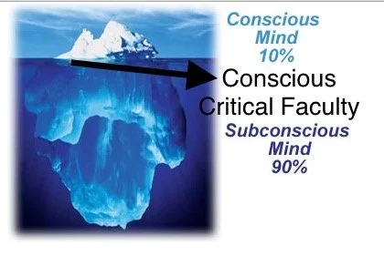

What is Hypnosis? and How Does it Work?
Are you here to find out What is Hypnosis and How does it work? You have no idea what is the big deal about Hypnosis? Then you have landed on the right page. My first expression about Hypnosis, just like many of you, was the visualization of the swinging pendulum. I also believed that someone will control my mind while I am under Hypnosis and make me do funny things. I am glad to have found that I was wrong and I am happy to share all the factual insights.
The aim is to clear all your myths about Hypnosis and understand what Hypnosis does. Understand the conscious and the unconscious mind.
The Conscious and the Unconscious Mind: What is Hypnosis?
Hypnosis is a natural state of mind. We have one brain, one mind, but it has two characteristics or functions: the Conscious Mind and the Subconscious Mind. Let's use the common metaphor to represent the mind—the ICEBERG concept. What you see on top, or the surface of the water, is 5%-10% of the iceberg. What you see at the bottom is 90%-95% of the iceberg. The 5%-10% is your Conscious Mind and the 90%-95% is your Subconscious Mind.
In general, both these characteristics/functions of the mind are in constant conflict. But in Hypnosis, what happens is the conflict stops. Both characteristics of the mind—Conscious and Subconscious—work in harmony toward the same goal. Hypnosis calms your conscious mind and lets it take a back seat from all the multitasking and chaos happening around us. On its own, Hypnosis enhances relaxation.

Sigmund Freud the Father of Psychology.
How does Hypnosis Work?
Two major things happen in your mind when in Hypnosis:
- Focused Concentration: This narrows your attention from the outside world, work, and family to something more inward like breathing and body scanning. This is essential to keep your conscious mind busy.
- Bypass the Conscious Critical Faculty (CCF): The CCF is like a filter between the Conscious and Subconscious Mind. When the conscious mind relaxes, the filter starts to go down, making it easy to reach the subconscious mind. We go in and out of hypnosis several times a day, such as while driving, reading, or watching television.
(The line in between. The surface line of the water is the representation of CCF)

Who can be Hypnotized?
If you remember I said Hypnosis is a NATURAL state of mind. What it means is that even while you are reading these Hypnosis resources you are hypnotized. You are so focused that you don’t notice the messages popping on your phone unless it is urgent. Another example that everyone can relate to is while watching a romantic movie and crying when the lover dies or watching a scary movie and getting startled when the monster shows up, even though you consciously know that it is a movie and you are at the cinema.
Why does this happen? This happens because you are so focused on the activity (Focused concentration) and the conscious critical faculty is at rest (bypassing the CCF) allowing information to go to the subconscious. So, for example, while watching the movie your subconscious accepts this movie and its character as real characters. Another relatable example would be being on a road trip. How many times you have found yourself on a beautiful road trip and have lost track of time and the next thing you know you are parking your car. If you could relate to a few or most of the above scenarios, then congratulate you have been Hypnotized before and you can easily accept Hypnosis. As all Hypnosis is Self-Hypnosis.
Myths about Hypnosis
It’s time to clear the first myth about hypnosis, that someone will control my mind or I will be "under" hypnosis. What we see on TV about stage hypnotist is true but it’s because you believe that he has the power and you are awed by his tricks just like magic and just like that it becomes easy for the hypnotist to manipulate you into doing something that you didn’t want to do.
In this stage, Hypnosis subjects get hypnotized because they want to impress the Hypnotist and go with the flow or due to peer pressure from the other subjects that are with them. The people around, the confusion that has been created, all the attention and the manipulation involved and boom you are hypnotized next thing you know you are speaking another language or surrendering your belongings. Hypnosis will not and cannot MAKE you do things that you genuinely would NOT WANT to do. And you cannot be "under" Hypnosis. It is instead, a natural state of mind.
Time to clear myth number 2: The information that you might have read in a dictionary or the Greek meaning Hypnos=Sleep. Well, now you understand that Hypnosis is not SLEEP however, it may appear that way. It is just an altered state of consciousness. You are not semi-conscious or unconscious either. In fact, you are highly receptive in this state. Remember that your subconscious mind is always there to protect you. (That’s how you wake up from deep slumber hearing a fire alarm because it is telling you to run)
Read more about myths and frequently asked questions
Understanding How Hypnosis Works
Going back to two features of the mind Conscious and Subconscious. Both of these features speak different languages. Whereas the Conscious mind speaks the language of logic, reasoning, analysing, rationalizing, etc. The unconscious or Subconscious mind speaks only one language IMAGINATION. But is responsible for many important functions like digestion, heartbeat, pulse rate, emotions, beliefs etc. This is where Hypnosis plays a major role.
If you remember at the very beginning, I mentioned Hypnosis relaxes the conscious mind and lets it take a back seat by bypassing the CCF. What it also does is, in Hypnosis your conscious mind stops all the logical thinking and all the analysing (should I do this? should I not do this? is this right? is this wrong?) and takes a break. Through Hypnosis conscious mind becomes calm and accessing the Subconscious mind becomes easy and together they can focus on one common goal.
It is impossible to define what is Hypnosis? but, in short, Hypnosis is like a guided meditation. Let’s say Hypnosis is like a mind massage that relaxes your mind. All you can achieve through Hypnosis is extreme calmness and relaxation of your mind and nothing else. You can use it for temporary relief from stress, it is an excellent tool to practice for health and daily mental relaxation.
Hypnosis is a tool if used well can allow the Hypnotherapist to bring about a beneficial change. It’s not Hypnosis alone that brings about the change. The therapy conducted with that hypnotized person is what facilitates the change and thus is called Hypnotherapy.
When the change is made, clients are introduced to Self-Hypnosis to maintain relaxation, well-being, happiness, etc. However, it can be practised by anyone who looking for mind relaxation. Hope this explanation has helped you understand what is hypnosis? and how does it work?
Can I Practice Hypnosis by Myself?
Yes! As mentioned earlier all hypnosis is self-hypnosis. You most certainly can practice this skill safely. It is highly recommended. All you have to do is sit in a calm, quiet place, close your eyes and just start slowing and relaxing your body.
In your mind give yourself commands like “now I am stretching my toes” and physically with eyes closed stretch your toes “now I relax my thighs” and so on move to your entire body stretch and relax each muscle and body part. Because the more you relax your body it will be easier to relax your mind. Just like cooling down after heavy gym exercise but the only difference is with eyes closed. Tell yourself that my job is to relax and when I open my eyes I will be refreshed, energized and happy for the rest of the day.
If while relaxing a thought pops up that’s fine you are not a monk to have a blank state of mind. It’s natural to have thoughts just come back. Start from where you stopped and watch them flow away.
Or play calm soothing music and focus all your attention on every beat, sound rhythm of that music. You find your mind wandering away bring it back. Set a time start with 5 minutes then level up.
What are the Benefits of Hypnosis?
- You are teaching your mind to be in this natural state of mind. When a challenging situation arises you will see yourself more relaxed and in control.
- Hypnosis releases the same feel-good organism that one would release after dancing or workout or yoga.
- It is a great stress-busting tool that you can carry and practice whenever and wherever you like.
- You start using the resources that are inside of you.
- You become more calm, collected, and confident and you will stay happy.
Summary for What is Hypnosis and How Does it work?
- Our mind has two features: Conscious and Subconscious.
- For Hypnosis to take place you need Focused attention and Bypassing of the CCF.
- The conscious mind is responsible for logic, and reasoning and the Subconscious are good with imagination and is responsible for our emotions, beliefs, and bodily functions.
- You can practice self-hypnosis safely.
- What is Hypnosis? It is a natural state of mind.
- Everybody can be hypnotized.
Hope this article has helped you understand the functions of the conscious and the subconscious. I hope you have cleared your myths about hypnosis and now you have a better understanding of what is hypnosis and how it works. I am a certified Hypnotherapist and I use many other modalities to ensure a lasting and permanent effect. Thank You for reading.